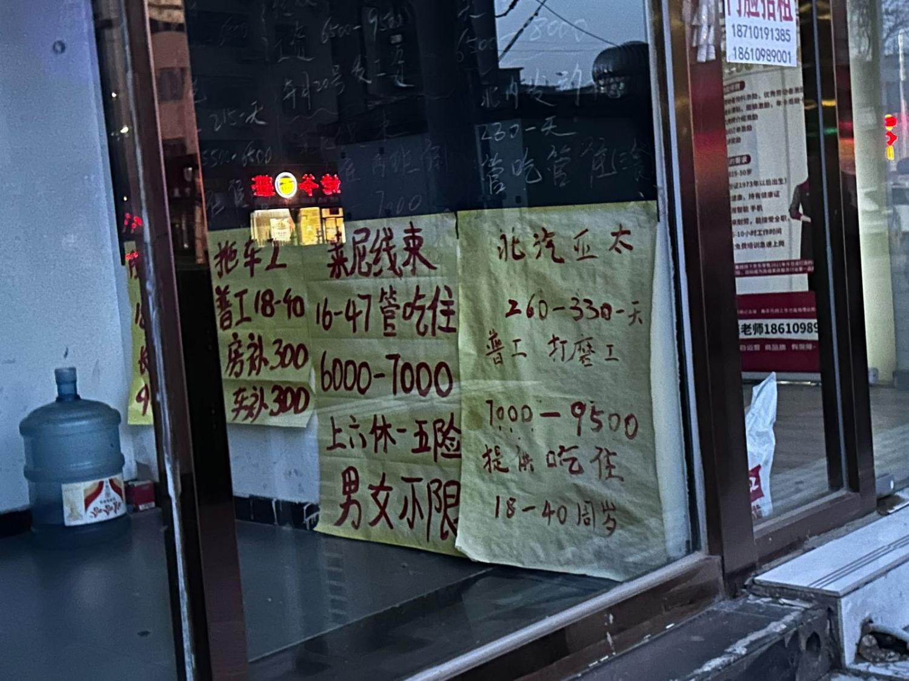

根据中国人口普查年鉴数据，近三十年来，我国60岁以上人口在业人数持续增长，截止到2020年，已突破六千万，占到60岁以上人口总数的四分之一。
也就是说，我国每4个60岁以上老年人中，就有一位仍在工作。
数据出处：《2020年人口普查年鉴》
注：鼠标悬停可查看具体数值
为了了解现如今老年人的就业市场，我们爬取了前程无忧、BOSS直聘与猎聘三家招聘网站上招聘退休后大龄群体的岗位，合计883条。
个人主观意愿和客观条件，共同推动着大龄打工人走上求职之路。
据前程无忧的调研报告数据，46.7%的老年人重返就业市场为寻求个人和社会价值。19%的求职者希望发挥一技之长，继续追求职业发展。
王立军夫妇今年六十多岁了，他们二人一个是专业的机电技术人员，一个在社区卫生院工作，都在自己的领域有着丰富的工作经验。虽然早已到了退休年龄，但他们仍在工作着。
像王立军夫妇这样的技术型人才，在专业岗位干了大半辈子，多年来积淀出的经验是他们工作经历中最宝贵的财富。退休后，“发挥余热”成了他们最大的愿望。
在老年离退休人才网中，有众多求职者都在自述中提到“想发挥余热”，他们不计工作报酬的高低，以劳为乐，不想浪费自己的本领。
杨宽今年50岁，一辈子都在建筑工地干活。干建筑是个体力活，一口气扛起几十斤的水泥，一天砌几百块砖，对杨宽来说都是家常便饭。常年高强度的体力劳动带来的是越来越差的身体状况，他开始考虑离开工地。但杨宽并不想就此停下，他想再找一个轻松点的活，继续工作。
今年年后，杨宽在短视频平台上找到了一个在北京招快递分拣工的厂子，和中介简单定下工作后，他独自坐火车从老家山东来到了北京，那是他第一次离开家乡。
家里人并不赞成杨宽来北京工作，但杨宽是个倔脾气。一个下午的功夫，他“说来就来了”。
(鼠标悬停可查看典型叙述）
在客观原因上，经济负担是最重要的一环。
今年3月，玉子在社交媒体上发布了一则帮妈妈陈欣找工作的帖子。
从2001年起，陈欣一直一家制造业公司做财务工作，今年刚刚退休。五年前，玉子还在准备申请国外留学，陈欣和丈夫感情破裂，二人分开后，约定各自承担一半玉子的学费。但就在玉子申请成功后，丈夫突然“人间蒸发”，彻底断了联系。为了让玉子安心读书，陈欣一个人担起了玉子的学费，一年就需要20多万。沉重的经济负担不允许陈欣的工作出现“空窗期”，正式退休的前几个月，她就已经开始海投找工作了。
“找工作这个事挺难说的，越是急着想找，越是找不到。”
玉子在帖子称她的妈妈陈欣为热爱生活、心态年轻的“女超人”，但在找工作这件事上，陈欣并没有像超人一样百战百胜。现实往往更加残酷，“处处碰壁”，是她给自己的大龄求职路总结出的“四字箴言”。
众多的大龄打工人，都对“碰壁”这件事深有体会，武广江也是其中之一。
下过雨的清晨，空气中的潮气还未散去，武广江站在马驹桥的街边“等活”。
马驹桥聚集着来自五湖四海的打工者，是北京最大的劳务市场。凌晨四五点是马驹桥最热闹的时刻，做日结零工的人们早早聚集在马驹桥的十字路口，寻找一天的活计。
小小的十字路口，在凌晨四点最多能塞下一千多人。
武广江却远离拥挤的十字路口，独自站在街边一家商铺的檐下。
他的眼睛有些浑浊，戴着一顶普通得不能再普通的深蓝色平沿帽，身上的呢子料外套和这身穿搭显得有些违和，衣服边缘有些发黑泛旧，应该已经穿了很多年。
马驹桥的人们很“自来熟”，今天有没有找到活、赚了多少钱、最近有什么活干，是他们最常聊的话题。热络的环境下，武广江显得有些笨拙，甚至“不合群”。
鬓角微微露出的白发也暗暗证明，武广江的确是有些“不合群”的。
在马驹桥找零活的人们大多三四十岁，但武广江今年已经64岁，在这里算得上是高龄。七八年前，经亲戚介绍，他从老家辽宁来到北京，开始做临时工。昌平、丰台、海淀、朝阳，北京的几个区，他都去过，保安、保洁、快递分拣，各种临时工的活，他也几乎都做过。
他说他在北京，是“流动”的。
现在在马驹桥，武广江一周只有两三天能找到活干。每周的周二、周六和周日，他还会去北京有名的大柳树夜市摆地摊，卖点从二手市场淘来的数据线、充电宝等小玩意。这是前年他为了维持生计，给自己发展出的副业。随着马驹桥的管理越来越严格，他把摆摊“阵地”换到了大柳树夜市，那里人流量多，东西也更好卖，生意好的时候能赚到三百多块钱，但差的时候可能本钱都赚不来。
武广江身后的灰色双肩包里装着他还没有卖出去的商品。他转身翻出一个麦克风形状的小型蓝牙音箱，最顶部扩音的海绵颜色有些发暗，显露出岁月的痕迹。不需要摆摊的时候，他就背着这些还未卖出的小商品一起“流动”，找活干。
根据2020年中国人口普查年鉴数据，除了广泛分布在农村的农林牧渔业，大龄打工人已经占据了制造业和建筑业的半壁江山。
“武广江们”，是这个求职世界的大多数。
他们没有较高的学历和专业的技术，只能在工地和工厂打转，做着高重复性、高强度的体力活。
年龄，是决定求职之门是否为他们打开的关键因素。
因为年龄大了，尽管自认为身体健康、吃苦耐劳，他们的求职之路仍面临着“有心无门”的窘境。
期望的岗位已经早早为他们关上了大门，留给他们的，几乎都是那些“年轻人不愿意干”的工作。
因为干了很多年财务，最初找工作时，陈欣也想再找一份财务工作。但财务岗位的年龄限制一般在50岁以下，一些稍大一点的公司，一看到简历上陈欣的年龄，就直接把她淘汰掉了。
海投了很久之后，陈欣终于进入了一家很小的公司做财务工作。但是工作了两天，她发现这家公司的运作不太正规，干了两天就离开了。后来她不再执着于找自己擅长的财务工作，开始“广撒网”，寻找能够接纳她的工作岗位。
家政、整理收纳、育儿辅食、政府补贴……能试的她都去试了一遍，但却处处碰壁，到现在也没找到一份合适的工作。
事实上，陈欣的期望职位只需要满足三个条件：朝九晚六、正规、工资说得过去。
在马驹桥，各个劳务中介所贴出的招工信息里，年龄限制也格外醒目。

张远杰在马驹桥的一家劳务中介工作了近十年，他将马驹桥现有的求职者划分为三类：
“一类是年轻人，18-40岁，靠着劳务中介或者其他途径，可以进厂，干长期工；
一类40-60岁，年龄太大了，没法进厂，等在路边，有活就干；
还有一类就是只想做日结不想做长期的，干一天，歇三天。”
在相对自由的劳务市场上，留给大龄打工人的选择也寥寥无几：
杨宽按照约定来到北京丰台做快递分拣工作，才知道厂子对快递分拣工的年龄要求是50岁以下。杨宽刚好50岁，对方稍微把年龄限制放宽了一些，他才获得了这个工作机会。
64岁的武广江几乎是马驹桥年纪最大的打工人。在马驹桥找工的人们大都有一些相似的特征：他们爱穿深色衣服，衣服上附着着一层灰尘，沾着或多或少，难以洗干净的水泥点。土和灰也同样钻进他们的指缝，浸透进他们手掌的纹路里，经年累月形成灰色的皲裂。这都是常年的工地工作给予他们的。
在这里，武广江陈旧但干净的呢子外套显得有些不合群，也在暗示着，他已经近乎超过了能够被工地接纳的年纪，失去了这样“满身泥土”的机会。现在在马驹桥，武广江一个星期大概只有两三天能有活干。上次干的活是在一个正在拆迁的工地做临时保安，负责维护拆迁秩序，活不太累，但一天只有一百二十块钱。
更重要的是，常年生活在马驹桥的人最近都有同一个感受——今年，活不好找了。
“鱼泡网”是一家专门针对蓝领工人及日结零工的招聘平台，我们爬取了其上近一个月发布的1794条招聘信息。其中，有1728个岗位招聘男性，1344个岗位招聘女性。
在所有岗位招聘信息中，超过六成的招聘信息对年龄提出了明确的限制。
在这些明确要求年龄的岗位中，仅有不足2成岗位的最大年龄限制在45岁以上。
对于主要从事建造业、制造业的蓝领劳动者群体来说，40已经成为最大的就业门槛。
(鼠标悬停可查看详情）
前两年，在马驹桥根本不愁没活干，很多人都能找到“八个小时赚三百多块钱”的工作。今年为什么突然招工的少了，那里的人也说不清，但他们认为总和经济发展脱不了干系。
可干的活少了之后，工厂都倾向于直接找熟人干活，来劳务市场大范围招人的情况越来越少，“现在我们的用工群里都没什么招聘信息发，有熟人，谁愿意从这里找不知道靠不靠谱的呢。”
前几年在马驹桥，武广江也能接到各种各样的活，他特别提到，他还当过好几次群众演员。当群演是他最喜欢干的活之一，“一天就两三个小时，也不累，盒饭里有好几个鸡腿，矿泉水随便喝。”他还能模仿出当时“拍戏”时，自己做过的拿枪的动作。虽然动作不太标准，但提起这段回忆，他浑浊的眼睛里一下子有了光亮，憨笑着，仿佛手里真的有一把枪。但现在，在马驹桥这样的劳务市场，群演的工作已经完全没有，还有很多工作，也像群演一样悄声消失。
当“找工难”成为劳务市场的普遍现象，像武广江、杨宽一样的大龄打工人，只会面临更加严峻的处境。
求职的大门何时为他们打开，永远都是个未知数。
当求职的大门真的开启，门内的世界，也并没有那么尽如人意。
最近在马驹桥，有个被招到顺义工地做临时工的小伙子被架子上的铁板砸中了脑袋，好在最后脱离了生命危险。但作为临时工，如何解决后续赔偿问题，仍是一个难题。
据了解，在零工市场，工伤问题一般有两种解决办法：
一是“私了”，即和用人单位私下沟通赔偿问题；二是打官司，用法律武器争得应有的赔偿。
他选择了前者，对方赔付给了他两万块。尽管可能并不够支付所有医药费，但这也是大多数临时工的选择。因为没有签订合同，缺乏基本的劳动权益保障，打官司面临着很大的风险，而且赔付金额并不一定高于“私了”。
大龄零工的境况则更为艰难。
今年2月份的一个凌晨，浙江宁波一位60岁的快递分拣工人，因心脏骤停猝死在岗位上。由于他年满60周岁，无法与快递公司建立劳动合同关系，因而无法缴纳工伤保险，也就无法进行工伤认定。这一事件的发生，第一次让超龄打工人的权益保障问题真正走入了公众的视野。
因为超法定的劳动年龄，大龄劳动者的工作保障问题往往更加难以被妥善解决，最凸出的也是工伤认定问题。超龄，临时工，意味着他们无法与用人单位签订一份正规的劳动合同。一旦发生意外，维权将变得难上加难。
在我国，各地法院判决的劳动争议案件中，也有相当一部分是因劳动者超龄而不能与用人单位形成劳动合同关系，因而被判无法享受工伤保险。
我们爬取了裁判文书网有关超龄劳动争议的案件数据，其中，有关工伤认定的问题最为突出。某案件的判决结果显示，“工伤认定的前提是存在劳动关系，原被告之间不存在劳动关系。”
这与我国目前实行的退休制度有关：我国现行的退休制度属于法定退休制度和强制性退休制度，即在达到法定退休年龄后，就必须结束正在进行的劳动关系，办理退休手续。在超出法定退休年龄之后继续工作的超龄打工人，只能与用人单位成立劳务关系而非劳动关系，进而无法进行工伤认定。超龄，临时工，意味着他们一旦发生意外，维权将变得难上加难。
尽管最高人民法院曾经对超龄打工人的工伤认定问题做出过批复，但在更广阔的的工作市场，这类事件依然难以得到很好的解决。
另外，建立劳务关系意味着他们的工作过程不再受《劳动法》和《劳动合同法》保护。除了工伤认定问题，在判决书中，“超龄”、“未建立真正的劳动关系”也是他们无法获得合理的劳动报酬和赔偿金，无法办理相关保险等的首要原因。其中还有103条案件，因原告“超龄”而“不予受理”。
大龄打工人近乎赤条条地推开了求职的大门，却难以在这个新的世界得到保护。
在老龄化问题逐渐严重的今天，如何更好地解决大龄人群的就业状况，已经成为了社会各界亟待解决的问题。
2021年起，我国政府陆续出台相关政策，推动发挥“银发红利”，鼓励大龄人口、低龄老年人再就业，并完善相关就业保障。
2022年2月，国务院印发关于“十四五”国家老龄事业发展和养老服务体系规划的通知，通知第二十一条重点提到了老年人的再就业问题，提出要加强老年人老年人就业服务、促进老年人社会参与，涉及到职业介绍、职业技能培训、社会组织规范化等多个方面。
但“武广江们”、“陈欣们”的打工历程，仍然困难重重。背负着生活的压力，年龄已经是他们再努力也迈不过的红线，求职的大门已然难以推开，门内的世界也充满危险。
对于老年人求职困难的问题，中国人民大学公共管理学院社会保障研究所的陈鹤副教授认为，在很难改变就业大环境严峻的情况下，政府应当从体力要求、技术要求等方面研究哪些职位适合老年人，并采取一些政策鼓励企业雇佣老年人。与此同时，老年人个体也需要对当前的就业形势有清晰的认识，做好个人职业定位。毕竟在经济新常态情况下，除了老年人，还有新毕业的大学生也正在投身就业浪潮。
另一方面，陈鹤副教授以退休返聘人员为例指出，工伤保险是需要关注的一个重要问题，他们本身处于退休身份，很难在我国的工伤保险中参保。这一问题在司法实践中差异也较大，需要国家调整相关政策。
放眼全球，日本、韩国、英国等国家也在关注着老年人口的就业问题。
作为老龄化严重国家，日本推出的相关政策十分完善。早在20世纪70年代，日本就制定了促进中老年人就业的特别措施法，该法律历经多次完善修订，成为日本现行的“老年人稳定就业法”（日文直译为《高年龄者雇佣安定法》）。2020年3月，这部法律做了新的修订，增加了用人单位在确保满足老年人到70岁为止享有就业机会，为老龄人口就业提供了坚实的法律保障。
在英国，老年人口打零工的现象较为普遍，各地政府针对当地不同程度的货运司机人力短缺、新冠疫情导致的公立医疗机构医护人员短缺，以及公立学校师资不足等问题，呼吁有相关背景的退休人员重新上岗，帮助国家应对危机，也在一定程度上解决了大龄人口的工作问题。
有国外先例的辅助，也许能够帮助我们更好地解决我国的大龄人口就业问题。
故事的最后，他们都选择以“回去”，给自己的大龄求职之路画上句号。
杨宽后来也去了马驹桥，但还是没有找到合适的工作，
如今已经回到了老家，回到他最熟悉的建筑工地上；
陈欣还在一边碰壁一边前行，她说如果实在没办法，
她会选择回到曾经短暂待过一段时间的小公司，尽管那份工作并不适合她;
武广江准备明年回到辽宁老家，他说虽然过不了“好日子”，但是起码能够“维持生命”。
但我们期盼有一天，他们可以不再“回去”，而是能够昂首阔步走向人生的下半场。